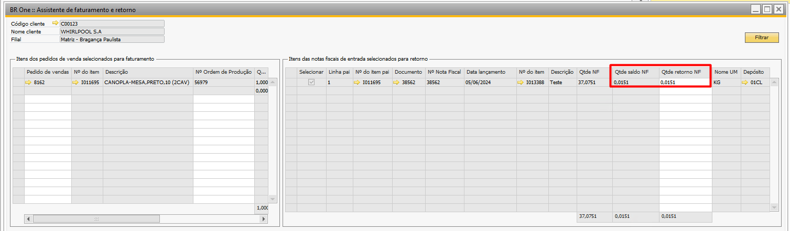

Configurações do Beneficiamento de Vendas
A tela Configurações do beneficiamento pode ser acessada através do caminho:
Administração -> Definição -> Beneficiamento -> Configurações do beneficiamento -> Aba Benef. Vendas.
{kind=link}
Na aba Benef. Vendas, devem ser configuradas as utilizações que serão utilizadas no processo de beneficiamento de venda, sendo elas:
Venda industrialização encomenda: Serão listadas apenas as Utilizações que não estejam selecionadas PN Gratuito e Só imposto.
Esta utilização será usada nos Pedidos de venda criados para o item que será beneficiado
Venda industrialização triangular: Serão listadas apenas as Utilizações que não estejam selecionadas PN Gratuito e Só imposto.
Esta utilização será usada nos Pedidos de venda criados para o item que será beneficiado e que fazem parte do processo triangular.
Entrada industrialização encomenda: Serão listadas apenas as Utilizações que estejam com o campo PN Gratuito selecionado e não estejam com o campo Só imposto selecionado.
Esta utilização será usada nas Notas fiscais de entrada contendo os itens de terceiros que fazem parte da estrutura do item que será beneficiado.
Entrada industrialização triangular: Serão listadas apenas as Utilizações que estejam com o campo PN Gratuito selecionado e não estejam com o campo Só imposto selecionado.
Esta utilização será usada nas Notas fiscais de entrada que fazem parte do processo de triangulação, onde deverá conter os itens de terceiros que fazem parte da estrutura do item que será beneficiado.
Entrada cobertura fiscal: Serão listadas apenas as Utilizações que estejam com o campo Só imposto selecionado e não estejam com o campo PN Gratuito selecionado.
Esta utilização será usada nas Notas fiscais de entrada* que fazem parte do processo de triangulação, sempre que houver notas de entrada onde a utilização é ‘Entrada industrialização triangular’ deve haver também uma nota fiscal com a utilização ‘Entrada cobertura fiscal’.
Retorno industrialização encomenda: Serão listadas apenas as Utilizações que estejam com o campo PN Gratuito selecionado e não estejam com o campo Só imposto selecionado.
Esta utilização será usada nas notas e linhas de itens que farão o retorno dos componentes de terceiro para o cliente.
Retorno industrialização triangular: Serão listadas apenas as Utilizações que estejam com o campo PN Gratuito selecionado e não estejam com o campo Só imposto selecionado.
Esta utilização será usada nas notas e linhas de itens que farão o retorno dos componentes de terceiro para o cliente, porém para os processos triangulares, isso é, o componente entrou por meio de um fornecedor e agora será enviado para o cliente.
Retorno material não industrializada: Serão listadas apenas as Utilizações que estejam com o campo PN Gratuito selecionado e não estejam com o campo Só imposto selecionado.
Esta utilização será usada nas notas e linhas de itens que não foram utilizadas no processo de beneficiamento e estão sendo retornadas para o cliente. Caso selecione por exemplo apenas os itens para retorno na etapa 2 do assistente sem selecionar itens do pedido de vendas a etapa 1, ao gerar documento para retorno dos componentes esta será a utilização.
Venda de material próprio: Serão listadas todas as Utilizações.
Esta utilização será usada nas notas de faturamento para as linhas com itens próprios que serão faturados do cliente.
Data Movimento: Data configurada para que o addon passe a consultar as NF de Entradas a partir da data adicionada no campo.
Ex. Se a data do movimento for definida como 01/02/2023 e existir uma NF de entrada para o processo de beneficiamento com data de 20/01/2023 esta nota não será exibida na etapa 2 do assistente de faturamento e retorno, pois a nota está com data anterior a data do movimento.
Realizar cálculos dos insumos por: Vai definir por onde o sistema irá controlar a quantidade de componentes de terceiros utilizados no processo de beneficiamento e que retornarão para o cliente. Este campo só poderá ser alterado caso não haja nenhum pedido de vendas em aberto com quantidade pendente para retorno, caso o usuário tente a seguinte mensagem impedirá a troca de configuração:
{kind=link}
BR One :: Não é permitido alteração do parâmetro ‘Realizar cálculo dos insumos por’ com pedido de venda ‘XXX’ com quantidade pendente retorno.
Previsto: Com esta opção configurada os retornos dos insumos de terceiros no Assistente de Faturamento e Retorno serão fundamentados no Relatório de Explosão, ou seja, a quantidade de retorno dos componentes será calculada conforme a quantidade de insumos no roteiro.
Realizado: Com esta opção configurada os retornos de insumos de terceiros no Assistente de Faturamento e Retorno serão fundamentados na saída de insumo e Entrada de PA da Ordem de Produção, ou seja, a quantidade do retorno será baseada nas saídas e entradas realizadas na OP.
Validar modelo de análise:
Quando o parâmetro “Validar modelo de análise” estiver marcado:
Se o item tiver um modelo de análise cadastrado, seja no campo Modelo de análise ou nos […], a recuperação do depósito deve continuar ocorrendo a partir da coluna “Receb. benef. vendas”. Se o item não tiver um modelo de análise cadastrado, a recuperação do depósito deve ocorrer a partir da coluna “Benef. vendas”.
Quando o parâmetro “Validar modelo de análise” não estiver marcado:
A recuperação do depósito deve ocorrer diretamente a partir da coluna “Receb. benef. vendas”, independentemente de um modelo de análise cadastrado para o item.
Reserva de lote:
Com este parâmetro marcado, será obrigatório na ordem de produção realizar o Pedido de Transferência de Estoque antes de efetuar a saída de insumos.O parâmetro somente poderá ser selecionado caso a configuração Realizar cálculos por insumo por esteja como realizado.
Informações complementares na linha do item:
Com parâmetro marcado e a utilização estiver configurada em Retorno Industrialização Encomenda, então o texto abaixo será gravado no campo Texto livre em cada linha do documento.
Retorno ref. sua NF Nº <Serial>, série <SeriesStr> de <TaxDate>.
Obs. Caso o campo Texto livre não esteja aparecendo na sua tela, verifique se ele está ativo conforme mostrado abaixo:

Com parâmetro inativo e a utilização estiver configurada em Retorno Industrialização Encomenda, então o texto abaixo será gravado no campo Observações de abertura e encerramento do documento.
As informações abaixo serão replicadas de acordo com o nº de notas fiscais diferentes dos documentos que serão retornados.
Retorno de mercadoria recebida para fins de industrialização através de sua(s) NF(s) <Serial>, <SeriesStr> de <TaxDate>.
Valida quantidade retornada: Com a configuração ativa, o add-on verifica na Etapa 2 do Assistente de Faturamento e Retorno, ao clicar no botão Seguinte se as quantidades retornadas não são superiores à necessidade da explosão do roteiro.
Permitir retornar NF’s triangular e encomenda: Com este parâmetro selecionado, ao passar para a etapa 2 do assistente de faturamento e retorno o sistema irá exibir tanto as notas fiscais de entrada com a utilização Entrada industrialização encomenda quanto com a utilização Entrada cobertura fiscal para retorno dos componentes.
Aba Seq. Numeração
Na aba Seq. Numeração serão configuradas as sequências referentes a cada filial ativa.
{kind=link}
Sequência NF Saída: Serão exibidas todas as sequências de numeração para a Nota fiscal de saída, correspondente a filial da linha.
Sequência Dev. NF Entrada: Serão exibidas todas as sequências de numeração para a Dev. NF de Entrada, correspondente a filial da linha.
Não permitir retornar quantidade com base no saldo da NF
Com o parâmetro Não permitir retornar quantidade com base no saldo da NF marcado e o valor no campo “Qtde saldo NF” for menor que o campo calculado “Qtde retorno NF”, não deverá substituir a quantidade de retorno com base no saldo da nota, deverá informar que não encontrou saldo suficiente em relação à quantidade calculada para retornar, deve ser impedido que o processo avance para a próxima etapa. Nesse caso, será exibida uma mensagem de erro indicando que o saldo da NF é menor que a quantidade necessária para retorno.
“BR One :: Não será possível avançar para a etapa 3, pois a quantidade do item ‘xxxx’ é menor do que o necessário.”
Exemplo:
Suponhamos que estamos realizando o retorno do item MESA. Sabemos que, para a produção de 01 unidade desse item, é necessário 0,01619 do componente MP. No entanto, ao filtrar as NF na etapa 2, encontramos um saldo no campo “Qtde. saldo NF” de apenas 0,0151. Nesse cenário, deve bloquear o avanço para a próxima etapa até que a quantidade tenha saldo em nota para realizar o retorno.
